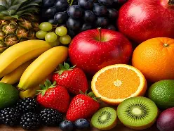

Fruits

Fruits give vitamins and energy. They provide essential nutrients for a healthy diet. Eating a variety of fruits can help reduce the risk of chronic diseases and promote overall well-being.
Learn More
Fruits give vitamins and energy. They provide essential nutrients for a healthy diet. Eating a variety of fruits can help reduce the risk of chronic diseases and promote overall well-being.
Learn More